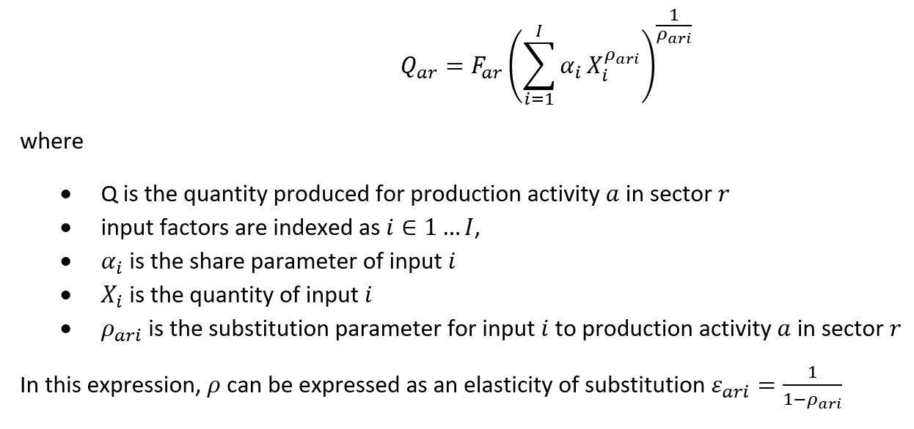
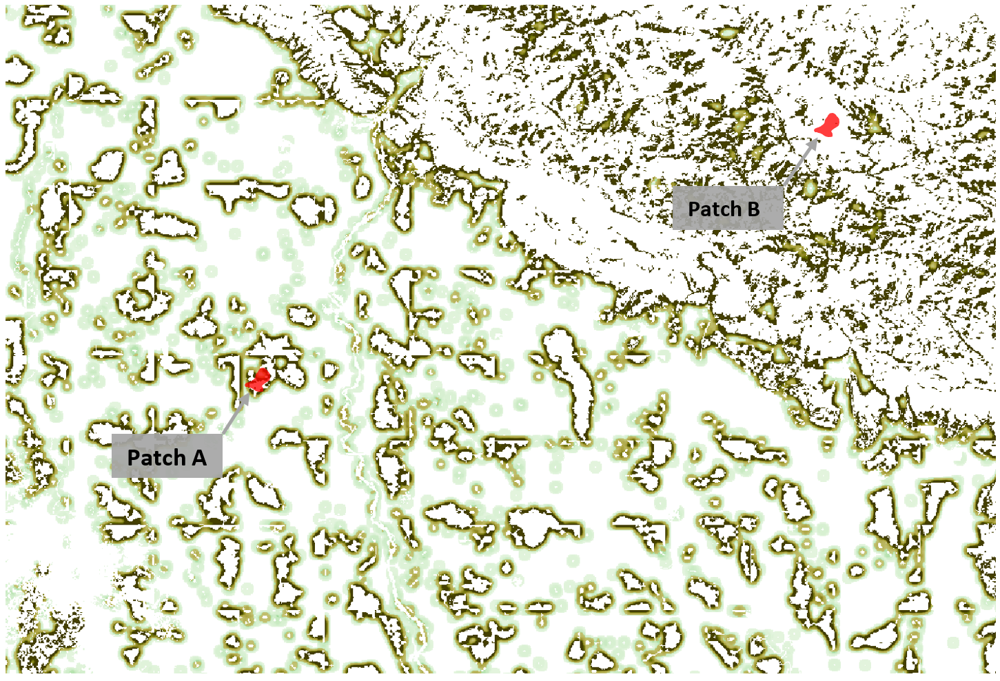

6. Connecting InVEST outputs to GTAP inputs
In the previous section, we described how we calculated the biophysical outputs of the InVEST model. These results on their own provide potentially useful results on the provision of ecosystem services. However, these biophysical changes alone are not enough to identify the impact on the economy. This section walks through the calculations for converting the raw InVEST biophysical outputs to Region-AEZ specific, factor-neutral productivity shocks.
6.1. How Region-AEZ aggregated shocks are inputted into GTAP
In GTAP-InVEST, there are three primary ways in which changing environmental conditions enter the CGE model. These include shifting the land supply curve directly to reflect a change in production, implementing a land-augmenting or land-reducing technological changes, or shifting the production function via a factor-neutral productivity shock.
In this section, we describe the third type of shock, which was used for the pollination linkage. We implement this as a factor-neutral (also referred to as Hicks’-neutral) productivity shock, which changes the efficiency coefficient in each impacted production function, scaled uniquely for each region and production activity in the following production function:

We solve the system of equations in the GTAP model (documented extensively in the GTAP user resources) for equilibrium values of prices and quantities where supply equals demand in all markets and all other regions and sectors can be affected by the change. This interconnection of markets shows one of the important advances captured by using a general equilibrium approach: changes in one component of the model will change equilibrium production and input usage, leading to different overall levels of change in the economy depending on exactly which sector in which region is affected.
For the pollination shock, the key parameter then is . To identify this parameter, we applied the following algorithm to process outputs from the InVEST Pollinator Sufficiency model
- Calculate the total value in 2014 USD of crop production on each 10 arcsecond grid-cell.
- For each grid-cell and for each agricultural production activity , multiply the production tonnage (Monfreda et al. 2008) by the price per ton of that crop, specific to the country the in which the grid-cell is located. These prices are produced from the FAOSTAT database, on which we applied the following missing-data procedure:
- If a price was not available for a crop in a given country for the year 2000, use the 10-year moving average.
- If 1.b.i cannot be calculated because of missing data, use the continental average price (or its moving average if needed).
- If 1.b.ii cannot be calculated due to missing data, use the global average price.
- Resample each activity-specific crop value map from 5 arcminutes to 10 arcseconds (to match the LULC map) using bilinear interpolation.
- Aggregate all crop-specific production values from 1.b to get the total value of crop production in each 10 arcsecond grid-cell.
- Calculate the maximum loss of value for each crop in each grid-cell that would occur if zero pollination habitat existed. To get this, we multiplied the production value from 1.b by 1 minus the pollinator dependence of each crop, as identified in Klein et al. 2013.
- Aggregate all crop-specific maximum production loss figures from 3 to get the total maximum loss of crop production value.
- Calculate the proportion of maximum value lost for a specific scenario by using the pollination sufficiency map outputted by the InVEST Pollination model for that scenario (see Sharp et al. 2020), categorizing all values greater than 0.3 as having sufficient pollination (threshold chosen based on the approach used in Chaplin-Kramer et al, 2019). In these grid-cells, assign them the value 1, indicating no loss from degraded pollination habitat. For all grid-cells in which pollination dependence is below 0.3, assign them the value 1-(1/.3)*pollionation_sufficiency, which scales the pollination dependence variable so that it is 1.0 right at the threshold but falls linearly to 0 when pollination sufficiency approaches zero.
- Calculate the crop production value lost for each scenario by multiplying the aggregate maximum cropland value lost (4) with the proportion of max value lost specific to that scenario (5).
- For each AEZ-Region (n=341), calculate the percent change in cropland value lost in the scenario minus the baseline value lost in 2014. Note that this means that we are only considering newly-lost crop production value and how it compares to the loss of value from pollinators already included in the baseline.
- Scale the value in 7 so that it can be aggregated from the AEZ-Region to the Region (n=36) level. Assign this scaled value to the five pollination-dependent production activities (variables gro, ocr, osd, pfb, v_f). This identifies the factor-neutral productivity shock for each activity and region.
- Rerun the full GTAP-model but with the values for as defined above.
- For each grid-cell and for each agricultural production activity , multiply the production tonnage (Monfreda et al. 2008) by the price per ton of that crop, specific to the country the in which the grid-cell is located. These prices are produced from the FAOSTAT database, on which we applied the following missing-data procedure:
This approach improves upon existing economic models that incorporate pollination. Specifically, past models quantified the contribution of pollination by multiplying the pollination yield-dependency ratio by the value of output for each crop (Gallai, Salles, Settele, & Vaissière, 2009; Lautenbach, Seppelt, Liebscher, & Dormann, 2012). This would provide a proxy estimate of value lost in a static case, but it does not incorporate how changes in production methods or factor usage would lead to different production choices. Other approaches employ CGE methods, such as in Bauer and Wing (2016), but these consider only the complete loss of pollination (and thereby do not consider any degree of spatial dependence between pollinators and pollination-dependent crops). Our approach improves on the literature by incorporating spatially explicit information on which land areas will experience loss in pollinator habitat and calculates the losses from changes in crop pollination, specifying how these losses arise from relevant scenarios of economic growth.
One important difference with our model from the CGE analyses of pollination impact discussed above is that our model goes beyond just calculating some arbitrarily large shock on pollination services, but instead calculates how a specific land-use change, calculated by GTAP-AEZ and represented with a high-resolution LULC map, leads to production effects. Calculating the spatially heterogenous impacts of a changed landscape generate informative results. Figure S.6.1.1 presents one example of this, showing how the precise configuration of where the land-use change happens can have a large effect on the productivity shock.

Figure S.6.1: Complexity of landscape affects the degree of pollination service:
6.2. Carbon Storage and Timber provision
We used the InVEST carbon storage model for both estimating carbon sequestration (this was subsequently valued using the social cost of carbon) and to estimate changes in productivity in the forestry sector. The InVEST carbon storage and sequestration model works by specifying carbon storage levels present in each of four carbon pools (above-ground, below-ground, soil, and dead matter) specific to each LULC class (see the land-use change downscaling section in this SI for specific LULC classes used, along with their parameters). We use parameters for the carbon storage model taken directly from the IPCC Tier 1 method (Ruesch and Gibbs 2008). The base InVEST model is intended to run for a single ecofloristic region, using carbon pool parameters specific to that region (Sharp et al. 2020). To run this globally, we developed separate carbon-pool tables for each of the approximately 125 carbon zones, where each carbon zone is defined as the unique combination of ecofloristic region, continent, and whether the forest is a frontier forest as specified by the IPCC (as in Ruesch and Gibbs 2008). To develop these tables, we built on work from Suh et al. (in submission), which recategorized ESA LULC data into seven functional types. We extended the classes considered to include carbon storage values for agriculture.
For the forestry sector, we used the outputs of the carbon storage model to calculate the productivity impacts in each region. Specifically, we calculated the percentage change in carbon storage on land identified by the GTAP-AEZ model as used for forestry. We averaged these estimates for each AEZ-Region to find the average change of biomass on potentially-harvestable land. We implemented this as a factor-neutral productivity shock for the forestry sector of each region according to the average percentage change for in that region. Using carbon storage as a proxy for biomass means that we are including more detail than approaches that are based strictly on forest area (e.g., Baldos et al. 2020), accounting for variation in ecofloristic region, frontier forest status, and other factors, based on field-estimates of aboveground biomass as summarized in Ruesch and Gibbs (2008). However, this proxy approach is very simple compared to detailed modeling of forest harvest. We were not able to compute such forestry models at the global scale, but forthcoming work from several research teams may make this possible for future applications.
6.3. Marine Fisheries
The InVEST marine fisheries model has been deprecated, and moreover, it would not have been able to produce global estimates. To model the ecosystem changes in marine fisheries, we use outputs from the FISH-MIP program within Intersector Impact Model Intercomparison Project (ISIMIP, isimip.org). We use results from the EcoOcean and BOATS models, based on the GFDL-ESM2M and IPSL climate reanalysis (following the methods documented in Tittensor et al. 2018). The models we used are global food-web models that incorporate both climate change and human pressures on a global, 0.5-degree grid and outputs results for many (51 in the EcoOcean model) trophic and taxonomic groups with the age structure of the populations included. This model run assumed no ocean acidification and excluded diazotrophic fish species (per the FISH-MIP guidelines). These results are reported in figure S.6.3, reproduced with permission from Johnson et al. 2020, showing the biomass density of commercial species under the baseline 2011 condition and under the 2050 BAU.
We chose to pair three of the FISH-MIP scenarios with our report scenarios as follows: first, our BAU scenario uses the FISH-MIP RCP8.5 and SSP5 scenario with BAU levels of fishing. To calculate the specific shocks given to GTAP, we extracted the total catch biomass (TCB) variable from the FISH-MIP database (hosted under the ISI-MIP data portal at www.isimip.org), which provide monthly and yearly observations of gridded total biomass of catchable, commercially valued species. For the BAU and SP scenarios, we defined the shock as the percentage change in TCB in each of the GTAP zones (augmented to include their 200-mile nautical claims). These shocks, defined in the supplemental data for this article, were applied as a factor-neutral productivity shock, scaling the TFP term up or down each regions’ marine fisheries production function. Note that results for marine fisheries were calculated by joining Marine Exclusive Economic regions with their associated country. We chose to report these results aggregated onto land regions for visual clarity, though the results themselves are calculated on the marine zones.
[1] https://www.regimeshifts.org/about
[2] R&D spending data from high-income countries is taken from Heisey and Fuglie (2018). For developing countries, we rely on data from two sources. Data after 1981 is available from the Agricultural Science and Technology Indicators database (https://www.asti.cgiar.org/), and we obtain data before 1981 from Pardey and Roseboom (1989) and Pardey, Roseboom, and Anderson (1991). Our R&D spending data for Eastern Europe and the Soviet Union come from Judd, Boyce, and Evenson (1991).